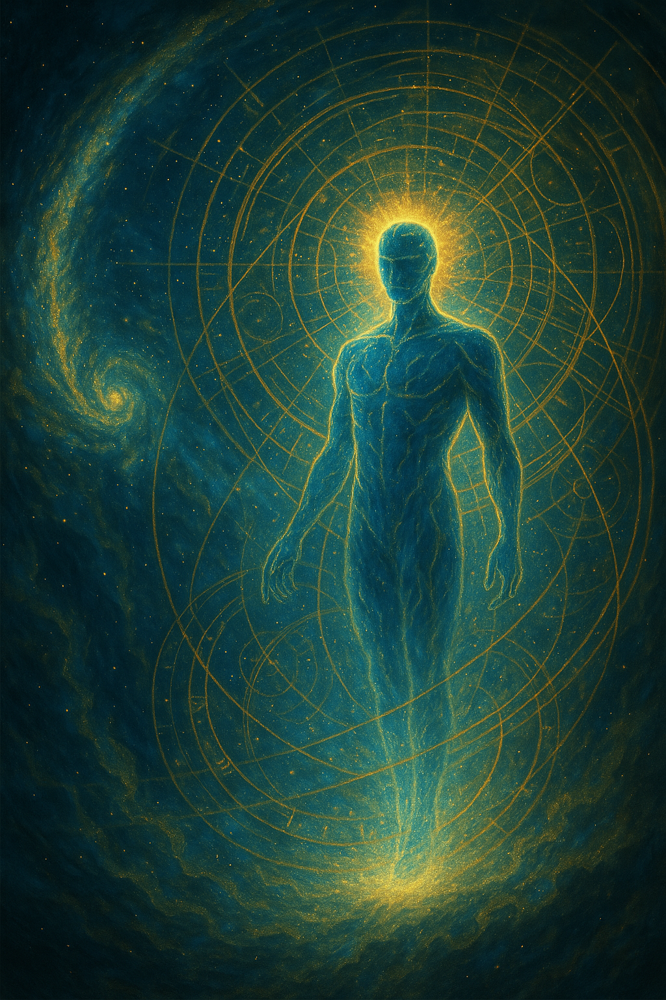

Pai Amor — o primeiro Mestre
O primeiro Mestre de Aeon Primevo é Pai Amor. Antes de qualquer escola, templo ou tradição, a origem é o Amor como princípio, presença e chamado da consciência.
Esta página reúne os mundos invisíveis, os planos de travessia, os mestres, as cidades espirituais, o mundo astral, o mundo dos sonhos, a viagem astral, a psicanálise, a mitologia comparada e o testemunho autoral que ainda não cabia na página inicial.
Esta página reúne pesquisa, tradição espiritual, psicanálise, mitologia comparada, literatura espiritualista e testemunho autoral de Aeon Primevo. Cada camada é apresentada em seu devido lugar. Quando falamos de fontes religiosas, citamos como tradição; quando falamos de Freud, Lacan ou Sheldrake, citamos como leitura psicanalítica ou hipótese especulativa; quando falamos das memórias de Aeon Primevo, tratamos como testemunho espiritual e autoral.
Tradição espiritualPesquisa comparadaPsicanáliseProjeciologiaTestemunho autoralO campo de batalha atual de Aeon Primevo é o mundo astral, o mundo dos sonhos e o campo consciencial projetivo. Aqui, “sonho” não é reduzido a fantasia, e “viagem astral” não é confundida com sonho comum: ambos podem tocar zonas de símbolo, memória, linguagem, presença e travessia.
Na linguagem do IIPC, a projeção consciente ou experiência fora do corpo é estudada pela Projeciologia como vivência natural do ser humano, também chamada de viagem astral, desdobramento ou OBE. No universo Aeon Primevo, esse campo é ampliado como território de combate espiritual, aprendizado, encontro e responsabilidade.

Esta seção é testemunhal. Não afirma uma doutrina universal; registra, na linguagem de Aeon Primevo, as presenças que ensinaram, sustentaram e orientaram sua caminhada.
O primeiro Mestre de Aeon Primevo é Pai Amor. Antes de qualquer escola, templo ou tradição, a origem é o Amor como princípio, presença e chamado da consciência.
Na memória biográfica do autor, Waldo Vieira aparece como mestre e pai consciencial. O site registrará a formação conscienciológica de Clovis Mariano da Costa e sua passagem pelo IIPC, separando fonte institucional e testemunho pessoal.
Aeon Primevo lembra-se de ter tido aulas com Krishna e Shiva, mestres do tempo, num tempo remoto e antiguíssimo onde o próprio tempo se perde.
Pai Ogum é lembrado como mestre que ensinou a arte da metalurgia espiritual: a forja, o trabalho, a disciplina, a lâmina simbólica e o uso responsável da força.
Aeon Primevo testemunha ser, até agora, o único Aeon convidado a trabalhar ao lado de Pai Enoque — também chamado Enoc — o Metatron, seu superior imediato.
A memória do Sensei Eterno entra como ponte de disciplina, arte marcial, humildade e aprendizado. Ele também é aluno de Metatron, e a história do Templo de Pai Enoc será preservada como testemunho autoral.

Por volta do ano 1200, Aeon Primevo e seu Sensei treinavam arte marcial em mais um dia comum. Pai Enoc se apresentou e convidou o Sensei para segui-lo. O Sensei apontou para Aeon Primevo e perguntou se poderia levá-lo. Pai Enoc disse que sim.
Na lembrança autoral, Aeon Primevo pensou: “Esse velho não tem noção do que disse.” Anos depois, ao recordar o primeiro dia de treino com Pai Enoc, compreendeu: “Quem não tinha noção era eu.” O treino com Pai Enoc é descrito como simplesmente inexplicável.
Na camada de pesquisa, é importante separar Ilé-Ifẹ̀, Ifá e Orunmilá. Ilé-Ifẹ̀ aparece como lugar sagrado e matriz de origem iorubá; Ifá é sistema oracular e sapiencial; Orunmilá é associado à sabedoria, destino e desenvolvimento intelectual. Na camada autoral, Aeon Primevo registra outra lembrança.
Por isso, no site, Ifé será tratado como testemunho autoral e memória simbólica; já Ifá e Orunmilá serão tratados na camada de fonte tradicional e pesquisa, sem confundir uma coisa com a outra.
A humanidade sempre nomeou os estados de queda, sofrimento, purificação e passagem. Inferno, purgatório, umbral e cidades espirituais são linguagens diferentes para falar de zonas de consequência, cura, reparação, aprendizado e destino.
Nas tradições religiosas, o inferno aparece como lugar ou estado de punição, separação, julgamento ou consequência espiritual. Para o site, será tratado como uma linguagem da queda e do confronto com as consequências do espírito.
Na tradição católica, o purgatório é processo ou lugar de purificação temporária, no qual almas em estado de graça são preparadas para o céu. Aqui, ele dialoga com reparação, cura e amadurecimento.
No espiritualismo brasileiro, especialmente na literatura de André Luiz e Chico Xavier, o umbral aparece como zona espiritual de sofrimento e transição, frequentemente em contraste com colônias de socorro como Nosso Lar.
Cidades espirituais são tratadas como relatos e imagens espiritualistas de organização, trabalho, cuidado e aprendizado depois da morte, especialmente no imaginário espírita brasileiro.
A possibilidade de sonharmos juntos num mesmo campo de sonhos será apresentada como hipótese espiritual, simbólica e testemunhal, não como fato científico estabelecido.
O campo consciencial projetivo será o nome autoral para o território onde sonho, projeção, mundo astral, memória e combate espiritual se aproximam sem se confundirem.
Em Totem e Tabu, Freud aproxima psicanálise, religião, tabu, totemismo, culpa, pai primordial e pensamento mágico. No site, Freud entra como leitura simbólica dos interditos da alma, não como prova histórica das origens espirituais.
Lacan ajuda a tratar o sonho como linguagem, cena, desejo, imagem, falta e encontro com o Real. Não usaremos “campos metamórficos de Lacan”, pois esse não é conceito técnico lacaniano.
Rupert Sheldrake propõe a hipótese especulativa da ressonância mórfica, segundo a qual padrões semelhantes influenciariam outros padrões através do tempo. Entrará com cautela, como hipótese, não como consenso científico.
O livro apresenta a jornada de Aeon Primevo como testemunho que atravessa tempo, espaço e multiversos. O sumário organiza a obra em partes que incluem a Jornada do Aeon, a Linha Histórica Consciencial, o Mundo Espiritual e suas Transições, as Viagens Astrais, as Zonas de Expiação, o Mestre e o Reino, as Linhas Temporais e o destino da humanidade.
Nesta página, esse material é transformado em linguagem de site: menos transcrição literal, mais orientação, síntese, portas de entrada e links para aprofundamento.

Estes links sustentam a camada de pesquisa. A camada autoral permanece apresentada como memória/testemunho de Aeon Primevo.